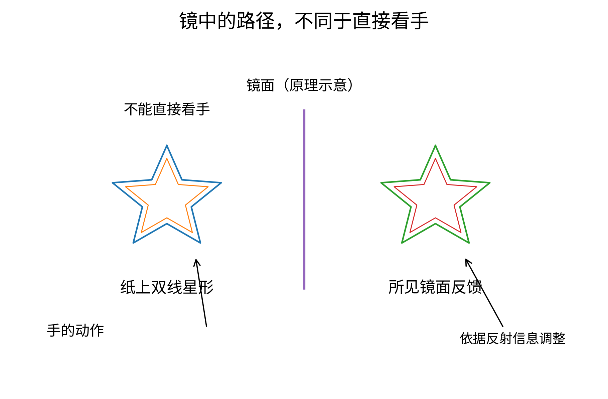
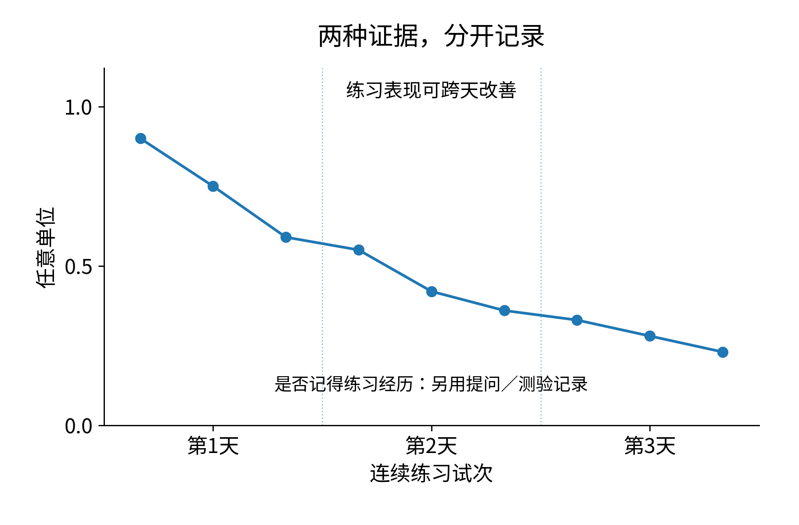
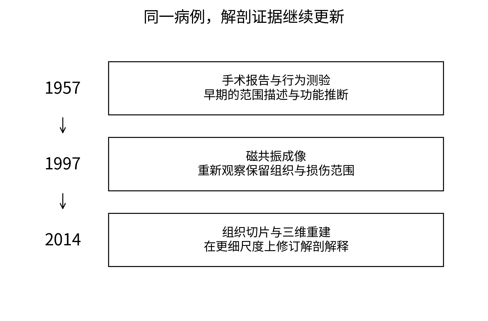
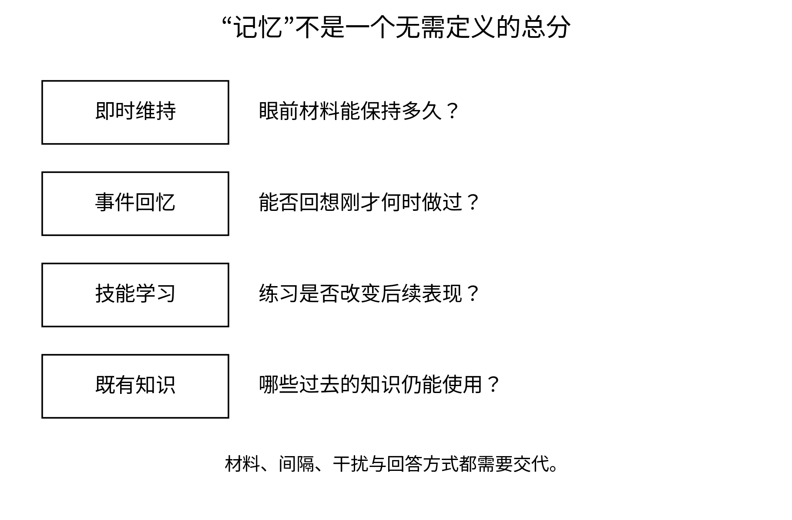

文件右上角只写着两个字母：H.M.。我拿着它站在门口，迟迟没有坐下。屋里的人却先替我挪开一把椅子，问是不是需要放本子的地方。布伦达·米尔纳向他道谢，他又向我问好，语气平稳而客气。那一瞬间，我想起所有写过这两个字母的论文，也突然觉得自己对眼前这个人知道得太少。
我原以为严重失忆应该一眼就能看出来。人会迷惘，话会说不下去，或者反复问一个令人难过的问题。眼前这个男人却能够交谈，听懂安排，也留意别人是否方便。他看见我把本子放得离桌边太近，还提醒我往里收些。我照做了，心里有一种说不清的尴尬：我带着一个结论进门，几乎忘了先向一个人问好。
米尔纳没有急着纠正我。她从文件里取出几张纸，问过对方是否愿意继续，便开始说明。她的声音清楚，不把同一句话说成对方应当感激的照顾。遇到不明白的地方，她换一种说法，而不是单纯提高音量。我坐在侧面记录，努力不让自己对历史的兴奋占据这间房。
他在研究中被称为H.M.。1953年，为处理长期而严重的癫痫，他接受了双侧内侧颞叶手术。术后出现的持久记忆困难，后来由斯科维尔与米尔纳等人系统研究。1957年的报告并非只写他一个人，还比较了其他接受不同范围相关手术的患者。那篇文章既提出了有关记忆的重要证据，也明确提醒后来者注意这类手术可能造成的风险。[16.1]
在论文里，手术、测验和随访可以紧接着排在一起。坐在房间里，我才发现它们之间隔着生活。人要起床，要用餐，要找到放东西的地方；旁边的人也得反复解释日程。某次测验表现不好，结束后纸可以收起来，困难却不会跟着收进抽屉。眼前的人不是为了给我们一个清楚的脑功能定位结果，才过这样的日子。
米尔纳让我把椅子往后挪一点，免得挡住光。我挪完，她又问对方是不是舒服些。他说可以。我忽然喜欢上她这种做事方式。她没有对我讲一段关于尊严的话，只是让一个准备参加测试的人先坐得舒服。这件事并不需要知道他以后会不会记住。
最先使我吃惊的不是遗忘，而是有些东西能够暂时留下。只要事情还在注意之中，H.M.并非每隔几秒就把周围全部重置。他可以保持一些简单信息，也能够跟着眼前的交谈继续。但当注意转向别处，或者要求在更长间隔后重新提取刚才的经历时，困难就会非常明显。早期报告与后来的随访，都把这种差别记录下来。[16.1，16.4]
我看到他顺利完成一项任务，立刻在本子上写“短时记忆正常”。米尔纳看过，问我这一行能代表多少种任务。我把笔停住了。她并没有说我眼前看到的成功不算数，而是让我把成功发生的条件留下：材料是什么，维持多久，有没有干扰，需要简单复述还是重新组织。省去这些，四个字看上去明确，实际上可能把另一种困难也盖住。
她自己问问题时，也很少满足于一句“记得”或“不记得”。同一件事可以换一种要求：是否能够说出来，是否能在几个选项里认出来，给线索以后又怎样。改变提问不等于替患者找一个更漂亮的成绩，而是分辨我们原先混在一起的过程。没有想到合适的任务以前，一个很大的判断往往只是研究者词汇里的方便。[16.10，16.12]
中间有人敲门，我出去取了一件东西，回来时顺口接上刚才的话。我说：“我们前面已经说到……”还没讲完，就看见米尔纳把手轻轻压在纸上。她重新交代了正在做什么，又介绍了一次我的名字。H.M.礼貌地点头，像对待一个刚刚到来的客人。
我脸上有点发热，不知道应该道歉，还是若无其事地再说一遍。他并没有为难我，是我自己被那个“已经”绊住了。我拥有刚才的那几分钟，所以随手把它递给他，好像我们都把同一段经历带到了现在。米尔纳等他理解以后才继续，没有把重来一次变成一场考验。
休息时，我问她会不会觉得累。她先问我指哪一件。我说总要重新介绍。她看了看那几张纸，说今天需要介绍，就先介绍。我有一点失望，本来以为她会说出能够写进书里的话。过了一会儿，我又庆幸她没有。对那个房间里的人而言，实在不需要我们把每次普通的礼貌都过成一次感动。
米尔纳不是因为遇见这个著名病例，才第一次走到脑损伤与行为的关系前。在蒙特利尔，她已经参与彭菲尔德相关的临床研究，比较不同颞叶手术后出现的变化；彭菲尔德与她1958年的论文也讨论了双侧海马区域受损相关的记忆问题。我在彭菲尔德那间手术室里见过的工作，又在这里接上了。[16.2，16.15]
她早年的训练又有别的来处。数学、心理学以及后来与赫布的联系，并没有在她开始临床研究时全部消失。我在她的自述与访谈里读到这些经历，才理解她为什么不满足于给病例贴一个症状名称。她既关心具体的人怎样表现，也关心这些表现是否迫使我们改变对心理过程的划分。两件事在她这里，并不需要轮流成为主角。[16.11]
我曾经在桌角画过一颗简化的大脑，准备把“记忆”写进海马旁边。写到一半，又想起彭菲尔德。知道某个结构参与某种功能，并不表示这种功能像一件物品，被完整装在那个位置。米尔纳看见那张图，没有替我继续画，只问：“哪一种记忆？”我说，记住刚才发生的事。她点了一下头，让我把整句话写上去。
一句很长的话占了很大地方，不像一个标签整齐。但这点不整齐有用。知道旧家的名字，与记住今天谁坐在面前，不完全是一件事；听完一句话暂时保持它，与第二天能够回忆出当时的情景，也不一样。H.M.的困难使某些差别变得显眼，保留的能力同样重要，不能只在损伤图上涂出一块颜色就把它们一并略过。[16.4，16.13]
到六十年代初那组让我最想停留的场景时，桌上出现了一面镜子。没有新的扫描设备，也没有一台比此前更大的机器。纸上是一颗双线勾出的星形，受试者需要在不能直接看自己手的条件下，利用镜中反射的信息沿着两条线之间描画。这个装置简单得使我有些怀疑，为什么此前没有想到要这样问。[16.3]
米尔纳先让我坐下试一试。我从一处尖角开始，手一动，线就跑到不该去的地方。我本来想向左修正，镜子里的反馈却使动作更加别扭。几次以后，我开始慢一点，也开始觉得这项测试多少带着一点捉弄。H.M.看着我停笔，问是不是不容易。我说是。他笑了笑，那一刻我才发现，房间里并不是只有我在观察他。

完整图注与资料说明
读者可从镜面反馈理解任务难点；这里仅展示星形路径、视线与遮挡逻辑，非原装置比例复刻，也不提供临床测验标准。参见[16.3，16.5]。正式记录时，米尔纳把每次练习的位置和结果分别留下。她不会因为某一次画得特别好，就把它当成整天的代表；也不会因为动作又出错，便立即宣布之前的改善是假象。我帮忙整理纸页，看到同样的星形一张张堆起来。它们乍看差不多，沿着日期与试次排好以后，却能慢慢显出不同。
我后来已经知道那个著名结论：在这类镜描任务中，H.M.的表现能够经过多次练习改善，并跨天保留，尽管他不能正常回忆自己此前参与过这些练习。米尔纳1962年的报告使这种反差成为理解记忆的重要节点。可在桌前真正等待时，我没有办法把结论直接放到还没完成的那一张纸上。[16.3]
第二天再开始，H.M.照样需要听说明。我的心先沉了一下，以为昨天做过的都白做了。等笔开始移动，我又看出自己想得太快。对练习经历的回忆没有像通常那样出现，并不意味着每一个与昨天有关的改变都被拿走。手在镜面反馈里走得怎样，需要另记一份证据。
第三天把记录排好时，我在两张纸之间看了很久。一边是任务表现的变化，另一边是对练习经历的报告。我以前习惯把它们放在同一个词下，叫作“记住”。现在它们没有一起变好，也没有一起变坏。若仍然只允许那个词有一个总分，我就只能漏掉其中一半。
“所以他记得。”我说。话一出口，又觉得不对。米尔纳没有立刻替我选一个答案。我换了一句：“练习对后面的表现留下了影响。”她这才让我把这句话连同测量方法一起写下去。我仍然想问他是否知道自己变熟练了，但没有再拿一个关于练习过程的回答，取消纸上已经出现的学习。

完整图注与资料说明
人工曲线只说明跨天技能改善与练习经历回忆困难可以分离，既不是H.M.原始成绩，也不是不同任务可直接比较的共同量表。参见[16.3–16.6]。我必须反复提醒自己，镜描变好不等于手指脱离大脑偷偷保存了一份记忆。它说明的是神经系统里有些支持技能学习的过程，与使人能够正常回忆一段事件的过程，并非完全依赖同一套条件。生活里两者常常一同工作，因此看起来像一件事；在特定损伤与任务面前，它们的差别才变得难以忽视。[16.3–16.6]
午后收拾时，我发现一张纸被放反了。日期看不见，单凭线条好坏，我竟然想把它放到自己认为合适的位置。我马上停住，把纸翻过来。只差一个动作，我就会让已经知道的结局替记录排序。米尔纳没有看见这件小事，我也没有特意告诉她。那张纸回到原来的地方以后，我安静了很久。
后来的研究并没有停在那颗星上。苏珊娜·科金继续研究H.M.，1968年的工作检验了若干运动技能的学习；同年她与米尔纳、托伊伯共同发表长期随访，把十多年积累的表现重新放到一起。一个病例之所以重要，不只是因为第一次观察惊人，也因为后来有人肯在新问题面前反复回来。[16.4，16.5]
我见到科金整理材料时，桌上的页数已经不像一篇论文那么容易放进一个文件夹。她需要知道哪些测试做过，什么时候做的，当时有什么条件，不能把所有年份当成一批同时收集的样本。对我而言，时间旅行把年代翻过去很容易；对研究者，随访意味着那些年真的要一点点过完。
我问她，既然现象已经这么清楚，为什么还要再试不同任务。她把两种测试放到一起，让我看它们分别要求什么。一次失败可能来自看不清、听不懂、维持不住材料、动作困难，或者提取不出来；一次成功也需要知道是否依赖仍然保留的路径。不能因为病例有一个著名名称，就让所有新结果自动带着相同解释。
这句话在我脑里停了很久。做队列研究时，我也常把某个诊断当成已经解释完的起点。分组的必要性没有消失，可组名里面仍然有不同能力、不同经历和不同难处。把它们平均起来，能够回答一类问题；回到一个人身上，往往会看见平均数没有告诉我们的那部分。
1980年，科恩与斯夸尔关于镜像阅读的研究，把保留的技能学习推进到另一种材料。参与者并不是用手去描那颗星，而是学习辨认镜像文字，某些遗忘症患者仍然能够取得并保留这类技能。研究使“知道怎样做”与“能够报告知道了什么”的区分获得新的支持，却也没有宣布所有未被意识报告的学习都由一个统一的小盒子完成。[16.6]
我试着照镜子读自己刚写下的几个字，读得很慢。大脑既在处理当下的视觉，也在借用此前熟悉的文字规则。一项任务看起来很小，内部却可能同时有很多过程。要说哪一种能力受损、哪一种保留，就得先知道测试到底让人用什么办法完成它，而不是只按任务的名字分类。
米尔纳在这方面的谨慎，有时使我觉得她不愿让故事好好结束。每当我以为可以总结了，她总还能找到下一项需要区分的条件。但若没有这种不肯过早收尾的习惯，H.M.恐怕只会被写成一个“不会再学习的人”。那个简单结论看似符合严重失忆的印象，却会错过改变理论的那一面。
有一次，我在整理材料时把“海马切除”写得很大，旁边画了一个空白区域。后来看到更精细的解剖研究，那张图又显得草率。H.M.接受的不是只在海马上干净取下一个独立零件的操作；病变涉及内侧颞叶的多种结构。早期对范围的估计，也不能替代后来真正获得的影像与组织学证据。[16.1，16.8，16.9]
1997年的磁共振研究重新描述手术影响的范围，显示仍有部分后部海马组织保留，同时其他内侧颞叶结构也受到影响。2014年基于身后脑组织的切片与数字重建，又提供了更细的解剖资料。那些结果不是让前面的行为观察作废，而是使我们更清楚，究竟什么样的组织改变与这些观察共存。[16.8，16.9]

完整图注与资料说明
早期手术估计、后来的MRI和去世后组织学提供不同分辨率的证据；图不标未经核对的病灶轮廓，不把H.M.简化为“只缺海马”。参见[16.1，16.8–16.9]。我一直靠脑图工作，原以为走到MRI这里终于可以轻松一点。结果恰恰相反。多了一种能看见的东西，就多了一组需要解释的关系。损伤范围、仍保留的组织、连接受扰以及多年后的变化，并不能统统折算成一个“海马缺失”的标签。图越精细，越不应该让一句粗略结论来替它发言。
1986年，佐拉－摩根、斯夸尔与阿马拉尔报道的另一位患者R.B.，在缺血事件后出现持续记忆障碍，身后检查发现突出的双侧海马CA1损伤。这类更局限病变的研究，为海马与记忆的联系增加了重要证据。它与H.M.互相补充，却不是在另一个人身上照抄了同一场手术。[16.7]
我把两种病例放在一起，第一次不再追求把它们排成完全相同的两行。不同来路的证据，可以指向共同问题，也可以显示不同条件。损伤研究、长期随访、技能测试、影像和组织学，并不是谁更先进就替其他人作最后裁决；它们各自看见一部分，也各自留下看不见的地方。
后来有人问我，这样一个重要病例的样本量为什么只有一。我很熟悉这种问题，也知道不能用“经典”两个字就让它失去效力。单个病例无法估计一个人群中所有人的表现，更不能取消重复和比较的必要。但一个可靠的反例，可以迫使一个宣称适用于所有记忆的解释修改边界。关键在于观察是否扎实，替代原因排除了多少，以及后续证据是否继续支持。[16.4，16.7，16.12]
这些话我没有拿到H.M.面前说。他没有义务听我们用自己的困难讨论研究范式。我回到房间时，先看他是否想继续。那天他有些累，我们便收起一部分材料。少做几项，意味着计划表没那么整齐；可一张计划表并不是需要疲倦的人迁就的理由。
我与他相处的时间越长，越不愿意用“永远活在现在”概括他。那句话似乎很容易让人明白严重的顺行性记忆困难，却也让他的过去、性格和保留下来的学习能力一并消失了。不同年代、不同任务给出的结果要复杂得多。我不想让一个方便的说法代替继续了解这个人。[16.4，16.13]
他可以礼貌，可以觉得事情有趣，也可以对周围的安排作出反应。我没有办法因为他后来未必记起某次谈话，就认为谈话发生时不重要。人若只有能够在第二天清楚讲述的经历才算经历，那么许多没有留下完整叙述的时刻，都将被我们从别人的生活中随手划掉。
有一天，我在他面前把茶水放得太远。他伸手去够，我赶紧推近，碰得杯子响了一下。他说谢谢。我也说谢谢，随后觉得自己回答得莫名其妙。他看着我笑了一下，没有追问。那个很小的错位使我突然难过，不是因为他做错了什么，而是因为我总想从这里带走一种关于人和记忆的总结，他却只是在过这一分钟。
回到外面的走廊，我翻看自己的本子。那里写满了别人怎样忘记，我却想不起昨日究竟是哪一次主动替他把椅子挪近。我的记忆没有因为属于所谓健康的一方，就自动准确而完整。它也选择，也重组，也把某些细节留给下一次叙述。研究者拥有记录，依旧需要防备自己把后来知道的事写进早先的回忆。
米尔纳在后来与克莱因共同回看这段研究时，仍把记忆当作一个可以继续追问的问题，而不是一座已经落成的纪念碑。我读那些文字，想到的不是一位早已获众多荣誉的学者，而是她低头看记录、要求我把条件写全的样子。真正反复出现的，是那种不肯把一个人的表现压成一句话的耐心。[16.14]

完整图注与资料说明
即时维持、事件回忆、技能改善与旧知识的测量要求不同；方框表示提问方式，不是相互独立、互不交流的脑模块，也不是H.M.保留能力的穷尽目录。参见[16.4–16.6，16.10–16.13]。这一次，时间没有把我带到斯德哥尔摩。我在房间外站了一会儿，原本以为所有重要发现最后都会被一张奖状收好。但米尔纳还在工作，H.M.还要吃饭、休息，还会再向我问好。他们之间发生的事，不因为没有一枚对应的奖章，就变得次要。我的笔记本里总该留一个地方，记下这样的房间。
离开那天，她在文件上补完最后一项，合好笔，抬头问我是不是要走。我说是。她问东西是否拿齐。我摸了一下口袋，手机和本子都在，突然又觉得还有别的东西没有收好。我想向她说，我已经不再把记忆当成一种只有有无之分的能力，可这句话太像交作业。最后只是帮她把桌上的纸排整齐。
H.M.看见我站起来，又向我问了一次好。那一瞬间，我差点用“我们见过”来纠正他。话到了嘴边，停住了。我重新介绍自己，说很高兴见到你，也谢谢你今天的时间。他认真听完，点了点头。对我而言，这是告别；对他而言，未必需要承担同一种先后。
后来我知道他的全名：亨利·莫莱森。他于2008年去世后，公众得以将一个人的姓名与那两个长期用于保护隐私的字母联系起来。姓名并没有取消科学文献中H.M.的意义，却提醒我，那个符号背后不是为某种理论而存在的例子。[16.9，16.13]
我在楼外站了很久，终于给母亲写了一条消息，没有写今天见到了谁。只问她小时候我学骑车，究竟摔过多少次。消息没有发出去。也许那台手机还没找到能够接通的年代，也许我只是忘了按下最后那个按钮。我看着屏幕，想起自己已经记不清每一次练习，身体却还保留着会做的事情。
那颗镜中的星也留在本子上。我翻过去，纸背没有奇迹，只有上一次用力太大透过来的笔迹。经历要留下影响，终究需要有某种能够改变、又能在此后继续起作用的东西。神经系统究竟改了哪里？如果不能把一个人的整个过去放到实验台上，有没有一条更小的路，可以让我们看见变化怎样发生？
我把本子合上时，闻到一点海水的气味。起初以为是风里带来的，抬头才看见面前有一只水槽。一个卷起袖口的男人弯腰看着里面，神情认真得像在等一位迟迟不肯答应的同事。他招手让我过去，说今天先不要问一个人能记住多少，我们先看看它能学会什么。